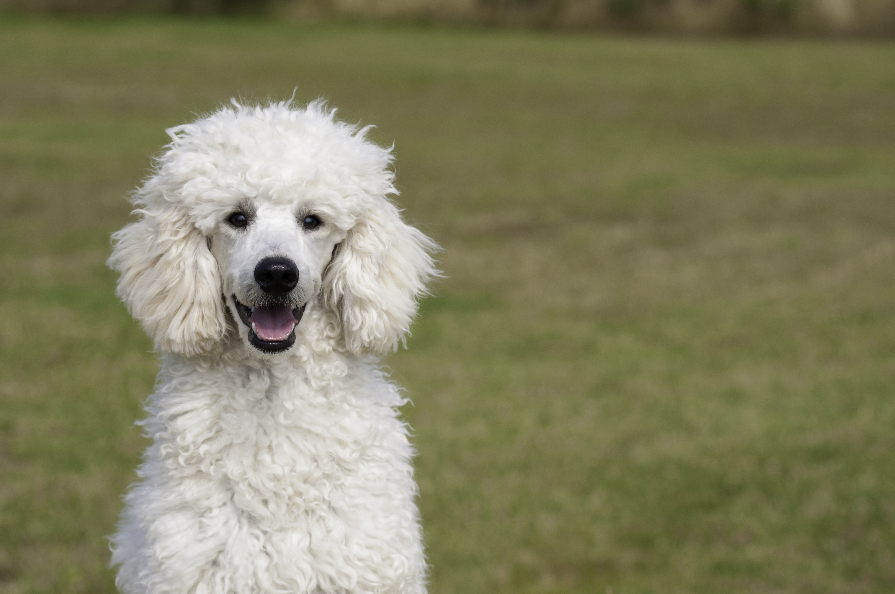
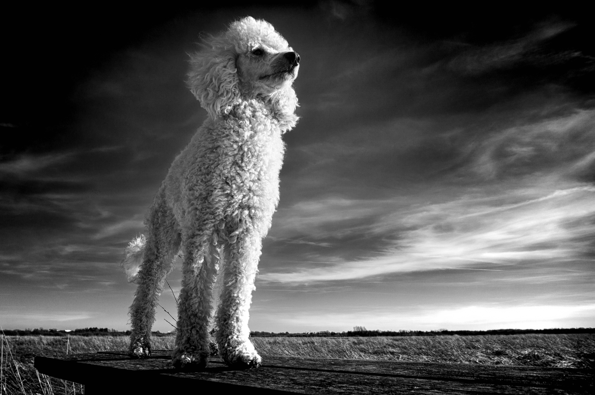

Detalhes do Poodle

Descrição:
Muito afetuoso e sociável, o
Poodle é uma das raças mais populares do Brasil e uma das mais
requisitadas no mundo, mantendo sua posição de queridinho graças à sua boa natureza. O Poodle é uma raça recomendada tanto para casais, quanto para famílias com crianças.
Com uma lealdade e fidelidade infalível com os seus tutores, o Poodle adora agradá-los, ele se adapta facilmente em todos os ambientes, em particular à vida na cidade. Eles geralmente se dão bem com outros cães, gatos e estranhos. Adora ser o centro das atenções.
A cabeça do Poodle é proporcional ao tronco, apresetnando um focinho de aspecto sólido, com stop bem marcado e trufa desenvolvida, de cor rpeta nos exemplares pretos, brancos ou cinzas; marrom nos exemplares marrons; e de cor marrom ou preta nos cães abricós e fulvo avermelhados.
Seus olhos de expressão fogosae forma amendoada, apresentam coloração marrom, âmbar escuro, ou preta. As orelhas são bastante longas, arredondadas na ponta, portadas pendentes ao logo da face. A cauda é de inserção bastante alta, no nível da linha superior. Em repouso, a cauda é pendente mas é portada obliquamente quando em movimento.
A pelagem da raça Poodle pode ser de doisa tipos, cacheada ou encordoada. A pelagem do tipo cacheada, também chamada crespa, é abundante, de textura fina, lanosa, bem crespa, elástica e resistente a pressão da mão. É um pelo espesso, farto, de comprimento uniforme, formando cachos iguais. Já a variedade de pelagem do tipo encordoado é,
também, abundante, de textura fina, lanosa e fechada, que forma cordõezinhos típicos e longos, não inferiores a 20 cm. A pelagem é unicolor, e pode ser preta, branca, marrom, cinza, abricó ou ainda fulvo avermelhado. O marrom é escuro, sólido, uniforme e vivo. O cinza, também uniforme não apresenta gradações de tonalidade com tendência nem ao preto e nem ao branco. O abricó, não chega as tonalidades fulvo pálido ou areia, nem ao fulvo avermelhado. Já a cor fulvo avermelhado deve ser também uniforme sobre toda a pelagem, sem tender ao abricó.
O poodle anão é o menor de todos os 4 portes de poodle. Muito difícil de encontrar, o cão desse porte tem a aparência de um bichinho de pelúcia e, por isso, acaba conquistando ainda mais olhares e corações. Sua altura fica entre 25 e 28 cm e seu peso ideal é algo entre 6 e 8 kg. Essa é uma raça perfeita para crianças e suas brincadeiras, mas é claro que devem ser sempre orientadas e supervisionadas por adultos
O poodle toy, por sua vez, é, possivelmente, a variação da raça mais popular, mas também não é muito fácil de ser encontrado. Com até 28 cm de altura e aproximadamente 4,5 kg, o poodle toy tem as mesmas características psicológicas do anão
Poodle médio é a variação mais fácil de encontrar e, apesar de ser o segundo maior dessas variações, ainda é pequeno, cabendo facilmente em pequenos apartamentos. Sua altura fica entre 35 e 45 cm e é bastante fiel e companheiro.
Por fim, o poodle standard, que é muito popular em competições caninas, é bastante elegante. Ideais para quem tem espaço em casa, os cães dessa raça tem altura entre 45 e 60 cm e são bastante brincalhões.
Origem e historia :
Embora o poodle seja mais frequentemente identificado com a França, seus antepassados
eram provavelmente cães com pelagem encaracolada da Ásia central que ajudavam com pastoreio e seguiram muitas rotas para várias partes da Europa..
Os franceses sustentam que é, indiscuivelmente uma raça originária de sua terra, Entretanto os alemães afirmam que se trata na verdade, de um cão nórdico autóctone. Outros autores, no entanto sugerem que a raça teria vindo na verdade, da região do Piemonte, situada ao norte da Itália. Essa teoria baseia-se no fato de que antigamente já havia na Itália cães da raça Poodle de inestimável beleza, que os turistas ingleses costumavam adquirir e levar consigo de volta à Inglaterra.
A hipótese mais aceitávei, no entanto, é a que sustentam os franceses, para os quais o Poodle moderno
, ou o Caniche como é conhecido na França, teria vindo do Barbet, um raro cão de mostra francês que se caracteriza por seu pelo crespo e lanoso. Do Barbet, o Poodle teria conservado principalmente o instinto de caçador.
.
Saúde e temperamento:
O Poodle é conhecido pela fidelidade, aptidão para o adestramento e obediência, o que faz dele um cão de companhia muito agradável.
É capaz de aprender com extrema facilidade, o que o tornou muito difundido em todo o mundo.
Classificada como uma raça de cão altamente energética e ativa, o Poodle também pode se cansar facilmente. De caráter essencialmente amistoso, o Poodle gosta da companhia da família, e em particular da presença do dono. É um cão carinhoso, amável, extremamante apegado ao dono. Muito sensível e instintivo, alguns exemplares podem apresentar um maior grau de agressividade, do que outros, especialmente em relação aos estranhos. Costumam se dar bem com cães e outros animais domésticos, no entanto, é recomendado aos cães da raça
Poodle que possam ser sociabilizados desde cedo, a fim de evitar comportamento excessivamente possessivo e potencialmente agressivo.
Como se trata de uma raça notavelmente inteligente, o Poodle precisa de estímulos frequentes, tantos físicos quanto mentais para evitar certos desvios de comportamento. A prática regular de brincadeiras, jogos e exercícios, como caminhadas, ou ainda o adestramento básico de obediência, é essencial para que o cão da raça Poodle possa se manter física e mentalmente saudável.
A tosa é um ponto essencial para os tutores de Poodles. A pelagem leve e encaracolada que funcionava bem quando o Poodle passava a maior parte de seu tempo na água caçando, precisa ser cortada regularmente, normalmente a cada 6 a 8 semanas, dependendo das preferências de tutor. Ela forma nós facilmente e requer escovação regular e diária em casa. Se deixada sem ser aparada,
a pelagem vai enrolar naturalmente em cordas, em estilo dreadlock.
O cuidado com a saúde bucal é importante, particularmente para Toys e Poodles Médios e Anões. Escove os dentes todos os dias com creme dental especial para cães e aprovados por médicos veterinários.
Apare as unhas conforme necessário, geralmente a cada uma ou duas semanas. Elas não devem ficar tão longas ao ponto de você poder ouví-las clicando no chão.
Um cão muito ativo, você deve exercitar seu Poodle todos os dias, além de investir em jogos para trabalhar seu intelecto. Ele é muito inteligente e vai adorar poder ser desafiado.
Manter as orelhas limpas com uma solução recomendada pelo seu médico veterinário. Não use cotonetes dentro do ouvido; eles podem empurrar a sujeira mais para dentro. Use sempre bolas de algodão umedecido, sem ir muito profundo.
Predisposição à Doenças: Geralmente saudáveis. Poodle Toy idoso pode apresentar: diabetes, doença de cushing (hiperadrenocorticismo), catarata, atrofia progressiva da retina, ressecamento de córnea, KCS (doença dos olhos secos), apresentar epilepsia, necrose asséptica da cabeça do femur (mais nos toys), entre outas
Curiosidades
– O Poodle Toy foi desenvolvido no século 18 na Inglaterra;
– Ele está em segundo lugar, apenas atrás do Border Collie, na lista desenvolvida por Stanley Coren, que categoriza raças caninas por inteligência;
– A imagem tradicional do Poodle, com o pelo encaracolado ou cacheado, é a primeira que vem a mente quando pensamos neles. O que poucos sabem é que o Poodle também pode ter o pelo encordoado,
similar com os cães da raça Komondor e Puli, Assim como em seus companheiros caninos húngaros, a pelagem encordoada no Poodle se desenvolve naturalmente com o tempo e para mantê-la, o tutor precisa ter uma boa dose de tempo e paciência;
– O pesquisador da USP e engenheiro têxtil, Renato Lobo, atento ao pelo e possível matéria prima desperdiçada em pet shops com o grooming regular de tantos cães, teve a iniciativa de transformar o pelo do Poodle em tecido. A partir de testes e pesquisas que começaram há 6 anos, eles descobriram que o pelo do Poodle é o mais similar ao da lã de carneiro, principalmente em termos de alongamento, absorção de líquido, isolamento térmico e tingibilidade;
– O artista Jeff Koons já recriou alguns Poodles em suas obras, como um feito de aço que tem a forma de um cachorro feito com balão e uma escultura perfeita de um Poodle;
– A palavra poodle vem da palavra pfudel, que em alemão significa “poça”;
– Também conhecido como Caniche, acredita-se que deva seu nome ao termo “canichon”, que designava outrora tanto um pequeno pato quanto o cão que o caçava;
– Diferente dos outros cães, o Poodle tem uma pelagem que se assemelha ao cabelo humano. O pelo canino cresce apenas até determinado ponto, depois se desprendendo do corpo. Já o do Poodle, ele continua a crescer;
– Uma dos motivos que o Poodle tem sido cruzado com outras raças, criando o que conhecemos hoje como Designer Breeds (Labradoodle, Cockapoo, Goldendoodle, etc), se dá por causa de seu pelo, e na busca de criar um cão hipoalergênico (o que não existe em sua totalidade);
– Em 1787, o Poodle ganhou de Beethoven a composição intitulada “Elegia à Morte de um Poodle”;
– Entre os Poodles mais famosos da sociedade humana, estão os dançarinos das festas nos grandes salões promovidas pela aristocracia européia no século XVI;
– Tutores famosos que têm ou já tiveram um Poodle: Beethoven, Chopin, Winston Churchill, Walt Disney, Elvis Presley, Marilyn Monroe, Elizabeth Taylor, Patrick Swayze, Barbra Streisand, Ellen Pompeo, Grace Kelly, Portia de Rossi, Blake Lively, Rihanna, Katy Perry;
– Filmes que contaram com a presença de Poodles: Entrevista com o Vampiro, Zoolander, Babe, Edward Mãos de Tesoura, etc;
– Poodle ganharam o Best in Show no Westminster Kennel Club Dog Show em 1991 e 2002;
– No Crufts, maior Dog Show canino do mundo que acontece todos os anos na Inglaterra, eles levaram Best in Show nos anos de 1955, 1966, 1982. 1985, 2002 e 2014.
– Taffy Gayle, um Poodle que morava no Alabama, Estados Unidos, viveu aé os 27 anos;
– Cães que se assemelhavam ao Poodle estavam presentes em moedas na Roma Antiga.
Preço médio no mercado
O preço vária de R$: 1000,00 a R$:4000,00
Fontes usadas:
Tudo sobre cachorros
Clube para cachorros
Guia de Raças
Portal Dog
